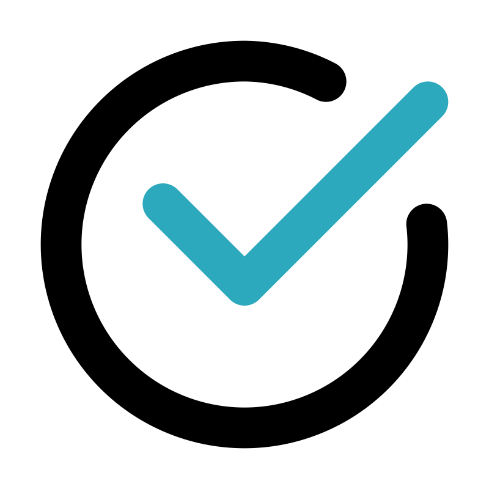

In brief
I graduated from the Università di Bologna with a Master in International Affairs, where I concentrated my studies on security issues and crisis management operations. Over the last few years, I have worked in both
for-profit and non-profit sectors, and in the international development realm, in Italy and abroad. As my interest for International and Humanitarian Affairs is still present and solid, I am intended on coupling it with the one for Web Development.
I have gained excellent interpersonal, listening and comprehension skills, and work very effectively in collaborative, team and autonomous environments.
 Education
Education
- 2022 - present
Start-2-Impact University.
Front End Web Development. - 2017 - 2021
Università di Bologna, Master's Degree in International Affairs.
Final dissertation titled “Aid under Fire: How Militarization and Politicization Have Hampered Fundamental Humanitarian Principles”. Graduation grade 109/110. -
2018 - 2019
University of the Aegean, Lesvos, Greece. Erasmus+ Programme.
Study of migration flows in the region, from a historical and political perspective, as well as cross-cultural communication. -
2014 - 2017
Università di Bologna, Bachelor Degree in Political, Social, and International Sciences.
Final dissertation titled ”La ricaduta giuridica dell'energia nucleare, l'evoluzione del Diritto Internazionale alla luce dell'atomica”. Graduation grade 105/110. -
2011 - 2012
AFS Intercultura Onlus, in Espoo, Finland.
Exchange-year abroad during the IV year of highschool, living with a local family and attending the local school.
Work
- 2021 - present
Comet SpA
Accounting and Administrative Assistant - 2020 - 2021
WeWorld-GVC Onlus
Program Manager Assistant for Italian and European programs; Bid writer. -
2019
Primavera Viaggi
Group Leader, Study Abroad Coordinator -
2018 - 2019
NGO A Drop in the Ocean (Moria Town) and NGO Stitching ShowerPower (Pigadakia), Lesvos, Greece
Humanitarian Worker
Skills
-
Italian
Mother tongue -
English
C1 -
Spanish
B1 -
French
A2
Hard Skills

HTML-5
CSS and its preprocessor, Sass
Bootstrap
CSS and its preprocessor, Sass
Bootstrap
Windows Office and Apple Office packages
Shared repository document collaboration - e.g., Outlook, iCloud, Google Drive, etc
Virtual meeting platforms - e.g., Teams, Zoom, Google meetings, hangouts, Skype, etc
Driving License - B
Soft Skills
- Flexibility, versatility, accuracy, precision.
- Problem solving and critical thinking.
- Ability to work both in team, and indipendently.
- Strong inclination towards contact with people, and excellent relational skills.
- Empathy, lots.
- Strong ability to adapt to diverse cultural and social contexts.
- Great commitment and self-determination.